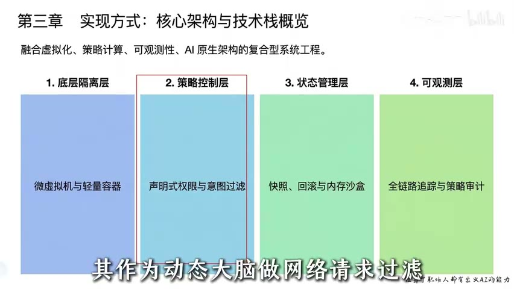

原视频 · 在线回看
点击后联网加载 B 站播放器；本地不下载整段视频。

原视频 · 在线回看
点击后联网加载 B 站播放器；本地不下载整段视频。
来源：AI Agent的沙盒是什么？17分钟讲清楚！
UP 主：AI大模型元元 · 17 分 23 秒 · 深度阅读
链接：https://www.bilibili.com/video/BV1JsEc6DEdt/
一个只回答问题的模型，说错了话，我们通常还有机会在采取行动前发现。让它开始读写文件、执行代码、访问网络之后，情况就变了。模型生成的一行指令可能立刻改变文件，或者把数据发送出去。此时，要求模型“谨慎一点”当然有帮助，但还需要系统回答一个更具体的问题：即便模型判断错了，程序实际能够影响多大范围？
沙箱就是围绕这个问题安排的运行边界。它把任务放在受限制的环境里，明确哪些文件可读、哪些位置可写、哪些网络请求可以发出，以及运行能消耗多少资源。Agent 仍然可以尝试解决问题，只是尝试不应直接获得整台机器或整个业务系统的权限。模型的判断存在不确定性，执行环境需要为这种不确定性留出保护。
假如 Agent 要整理一批文件，最简单的接法，是让它生成命令，再交给本机终端执行。命令只要能被系统接受，就可能开始修改文件。问题在于，模型理解的目标目录、生成的参数和实际执行位置，并不总是一致。一个原本只应影响任务目录的操作，可能因为路径错误触及其他位置。这里即使没有恶意用户，普通的理解或生成错误也足以产生损失。
外部内容还可能故意误导模型。Agent 阅读到的网页、文件或工具返回中，可能夹有要求它改变任务、读取秘密或向外发送数据的指令。这些内容原本只是待处理的材料，却可能被模型误当成应该服从的要求。提示词注入指的就是这一类通过内容干扰行为的风险。把模型限制在明确的执行权限内，可以减少它受误导以后能造成的影响，但仍然需要处理数据内容和系统指令之间的信任区别。
另一个问题是模型虚构了操作对象，例如不存在的服务器地址或数据字段。程序可能因此报错，也可能在错误目标上执行了合法操作。如果运行过程没有记录，开发者只看到最终回答，就无法知道中间实际访问了什么、修改了什么。安全边界和可追踪性因此互相关联：既要限制动作，也要知道动作是否发生、发生在哪里。
所以，Agent 的运行保护通常不止一个容器。容器或虚拟机提供一部分隔离，权限策略决定具体请求能否通过，状态保存帮助恢复任务，日志把各步操作连起来。不同系统可以有不同组合，没有一个组件只要叫作“AI 沙箱”就自动具备全部能力。我们需要沿着一次真实执行，看每一种保护在哪里起作用。
Agent 经常采取“试一次，看结果，再调整”的工作方式。这对于解决问题很有用，但外部接口变化、参数理解错误或工具持续失败时，Agent 也可能反复进行相似尝试。每次尝试看起来只消耗一点时间，累计起来却会占用大量计算资源，产生模型与外部服务调用费用。如果多个任务共享机器，一个任务持续占用资源，还可能影响其他任务。
因此，运行环境需要的不仅是文件与网络限制，也包括时间、并发、资源和调用次数等约束。达到限制后，是暂停任务、返回错误、等待用户，还是尝试恢复，需要由系统明确安排。模型可以参与解释为什么失败，不能让它无限决定“再试一次”。重复动作是否仍有希望解决问题，也不应只由一句“我会继续努力”来证明。
底层资源限制和业务费用限制还不相同。Linux 的 cgroup 可以对一组进程设置 CPU、内存等资源约束；CPU 配额限制的是一段时间内可消耗的处理器时间，不会自动判断这次任务值不值得继续，更不会代替外部 API 的费用预算。是否终止、怎样重试，仍需要上层控制逻辑配合。Linux cgroup v2 文档
当这些问题逐渐明确后，可以把运行保护分成四个相互配合的部分。隔离层回答代码在哪里运行；策略层回答这次动作是否允许；状态管理回答中断以后能从哪里继续；可观测层回答事情究竟怎样发生。图中把它们并列，是为了方便理解职责，实际系统里它们会贯穿同一条执行路径。
| 部分 | 最直接的问题 | 它不能单独保证什么 |
|---|---|---|
| 隔离环境 | 程序能接触哪些系统资源？ | 无法判断每个业务动作是否符合用户意图 |
| 权限策略 | 当前身份能否对这个对象执行此动作？ | 无法靠规则文字自动拦住绕开检查的执行路径 |
| 状态保存 | 能保存和恢复哪些任务状态？ | 无法自动撤销已经发生的外部操作 |
| 日志与追踪 | 哪一步发起了调用，结果是什么？ | 记录了风险，并不等于已经阻止风险 |
这张表中的最后一列很重要。安全问题常常来自把一个组件的作用扩大理解：有快照就认为任何操作都能撤销，有日志就认为所有行为都安全，有虚拟机就认为不用再控制访问权限。四层配合的意义，是让一层的局限有其他安排补上；即便如此，系统仍然需要测试和维护，不能承诺永远不会出错。
隔离技术的发展，可以从“不让不可信代码随意影响宿主”这一目标理解。早期运行第三方程序时需要权限限制；虚拟机进一步提供独立的客体系统环境；容器则利用操作系统提供的机制分隔进程和资源，减少运行开销。Agent 带来了更频繁、更动态的代码执行需求，因此我们希望隔离环境既足够轻，也能在任务结束后方便地清理或重建。
普通 Linux 容器通常共享宿主内核。内核负责进程、内存、文件等系统资源，多个容器使用同一内核，意味着隔离仍然依赖这层实现和配置。为任务建立更强的隔离，可以采用微型虚拟机等方式。Firecracker 利用 KVM 创建 microVM，以精简的虚拟化设备和运行结构降低开销；它仍然同时采用额外的限制措施来提供多层保护。任何单一隔离机制都不应被理解成绝对不会突破的保证。Firecracker 架构说明
另一条路线是 gVisor。它在用户空间实现应用内核，处理应用原本要直接交给宿主内核的系统接口，从而减少直接暴露的宿主接口。它与常见虚拟机的实现方式不同，也需要考虑系统调用兼容性与额外开销。因此，Firecracker 和 gVisor 可以一起讨论为隔离方案，但不宜把它们当成同一种微型虚拟机技术。gVisor 架构说明
对于理解 Agent 沙箱，最需要记住的是这些选择解决什么问题。模型要执行代码，我们希望代码只接触为当前任务开放的文件、网络和设备；任务需要多少兼容性、启动速度和隔离强度，会影响底层选择。具体系统也可以组合容器、虚拟化和访问控制，没有一种底层技术能够单独代替任务层的权限设计。
一个程序已经在沙箱内运行，不代表它在沙箱内想做什么都可以。任务也许只需要读取输入目录、写入输出目录，或者访问少数指定服务。最小权限的意思，就是把执行能力限制在完成当前任务所必需的范围。读取和修改的风险不同，查询外部服务和向外发送本地数据也不同，需要在实际动作发生前分别判断。
权限判断可以描述成几个具体要素：谁在操作，对哪个资源，执行什么动作，在什么条件下。策略引擎根据这些要素给出判断。以 Open Policy Agent 为例，应用提交结构化输入，策略引擎结合规则和数据返回决定，再由应用执行这个决定。也就是说，“判断允许”和“真正拦截”有明确分工；如果实际执行绕开了检查，规则写得再完整也无法起到预期作用。OPA 文档
有些动作可以在既定权限内直接运行，有些需要临时授权或人工确认。临时授权应当明确作用范围和有效条件，不能把一次同意理解为以后所有相关操作都获准。前置检查还可以识别可疑请求，例如试图读取密钥配置，但识别模型或分类器也可能误判。因此，语义层检查适合与文件权限、网络限制和明确审批共同使用，无法取代它们。
多 Agent 协作时，这种边界尤其重要。不同子任务可能承担不同职责，它们不应因为同属一个项目就自动共享全部访问能力。限制彼此能交换的信息和能调用的接口，可以减少一处错误向其他部分传播。这里的目标是控制影响范围，无法保证传播风险必然降到零；如果几个执行者仍共享过宽的凭证或可写目录，表面上的角色分工并没有形成实际隔离。
Agent 的任务往往持续多个步骤。已经读过资料、生成了中间文件、运行了一部分计算，如果进程突然中断，从头重做会浪费时间。状态管理让系统保存某个时刻的任务信息，之后从已保存的位置恢复。保存内容可能是对话与任务状态、文件系统变化，也可能包括进程内存；不同层次的保存方式解决不同问题，不能混为一个万能的“快照”。
文件可以通过可写临时层与基础内容分离，让试验产生的修改留在可控制的位置。进程层面的 checkpoint/restore 则尝试保存运行状态，再恢复执行。CRIU 是这类检查点与恢复工具之一，它处理的是 Linux 进程或进程树的状态。能否恢复还要看进程使用的资源和运行条件，无法只凭工具名称保证任何任务都能瞬间继续。CRIU 项目说明
尤其要区分本地状态和外部副作用。补充一个理解边界的例子：如果程序已经向外部系统发出一笔真实操作，恢复本地文件或进程，并不会让外部系统也自动回到此前状态。我们可以恢复的是被保存且可恢复的状态，已经发送的消息、外部数据修改等，需要相应系统自己的处理机制。正因为有这种边界，涉及外部影响的操作更需要事前约束，不能完全依赖事后回滚。
状态保存也可以帮助试验不同路径。先保留共同起点，再尝试不同方法，能够减少重复准备。但“路径可分叉”不代表所有试验都没有成本，存储、计算和外部交互仍然需要管理。恢复能力使失败更容易处理，它的作用范围应当在任务开始前就被理解。
当 Agent 连续调用多个工具，最后结果出错时，单看最后一条回复很难定位问题。我们需要把用户任务、模型发起的调用、策略是否放行、程序执行结果和后续动作联系起来。为一次任务和各次调用设置关联标识，可以帮助系统把分散在不同组件中的记录接起来，知道哪次请求引发了哪个操作。
例如，程序报告没有找到某个文件，我们需要知道模型提交了什么路径、程序实际在哪个目录执行、是否有权限限制，以及模型收到错误后又做了什么。只有“工具调用失败”几个字，既不能解释错误，也无法判断是否存在越权尝试。结构化日志把这些信息保存成便于查询的字段，后续才可能按任务、工具或错误类型分析。
日志也有自己的风险。调用参数、返回结果和环境信息可能包含敏感内容，记录时需要控制范围、访问权限和保留方式。可追踪不意味着把所有秘密都复制进日志。我们希望保留足以解释行为的信息，同时避免让日志成为另一个泄露渠道。这是运行保护的一部分，与让模型保守行动同样需要实际配置。
在测试环境中，隔离和状态保存还可以支持故障演练：使用适合测试的数据与环境，观察工具失败、任务中断或资源不足时会发生什么。测试能提前暴露问题，但测试环境与真实系统之间仍有差异。把生产数据或访问能力直接复制进试验环境，也不会自动变成无风险操作。
随着任务复杂度增加，系统可能根据风险和用户反馈调整检查方式：低风险动作在既定范围内顺畅通过，高风险动作需要额外确认；检测到异常时，暂时停止执行。这样的动态控制有潜力减少不必要的打断，但前提是风险判断可靠，授权范围清楚，而且能够解释为什么放行或阻止。
如果 Agent 可以为了完成任务，自行放宽约束自己的规则，就会产生明显的责任问题。自动化可以帮助发现需要修改的策略，策略如何生效仍应遵守系统设定的权限。类似地，可信执行环境、仿真和多方隔离可以增加保护，但都存在各自的适用范围，无法推出“宿主被攻破也绝对安全”或“仿真通过就完全没有现实风险”的结论。未来方向需要逐项验证，不能替代当前系统已经具备的保护。
让 Agent 行动，就需要同时说明它能在哪里行动、可以采取哪些动作、失败后能恢复什么，以及怎样知道实际发生了什么。隔离、策略、状态和追踪分别回答这些问题。它们配合起来，可以让一次错误更容易被限制、发现和处理。
沙箱的意义也因此很具体：允许任务在受控范围内尝试，同时保留停止和恢复的手段。模型判断越复杂，越需要把影响范围交代清楚。安全的基础是实际执行的限制和可验证的行为，任何一句“模型会小心”都需要这些安排来支撑。
把一个程序放进容器后，为什么还需要限制它能访问的目录和网络？隔离范围与业务授权分别回答什么问题？
如果一次外部操作已经发生，本地快照恢复以后，哪些状态可能回来了，哪些没有？这个区别会怎样影响事前审批的必要性？
任务因为资源不足停止时，哪些记录能帮助判断是计算本来就很重，还是 Agent 陷入了反复重试？把用户目标、调用和执行结果连起来，才能区分它们。